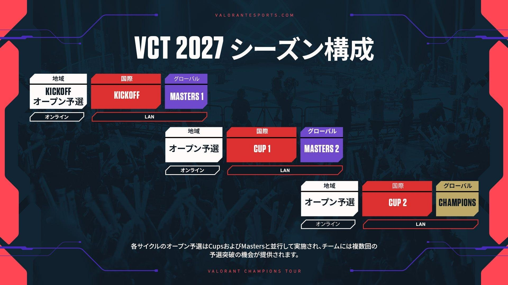
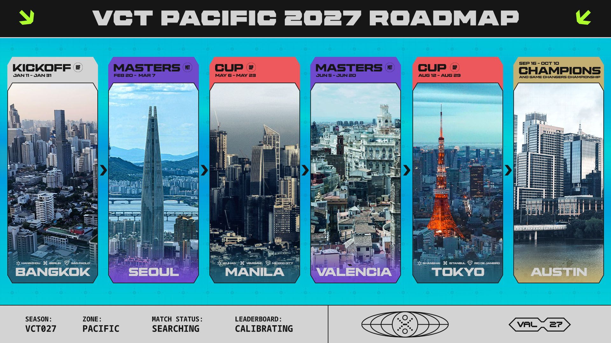
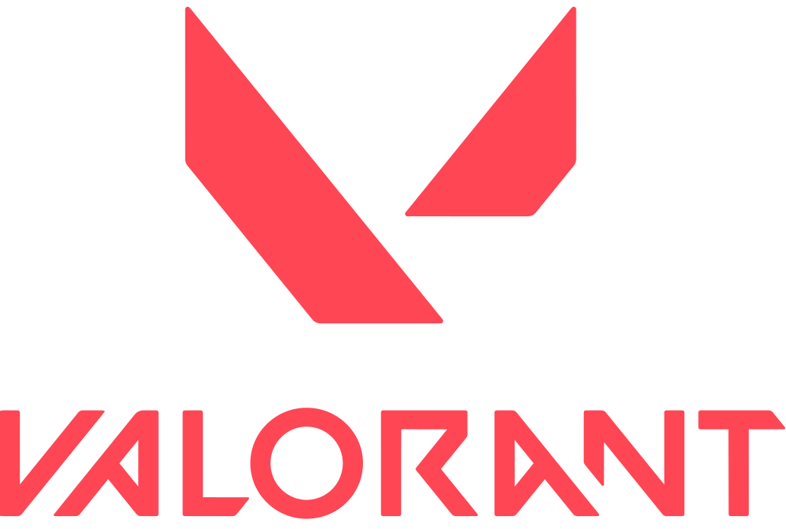

新しい形式
VCTは2027年からその形式を過去から大きく変更し、より多くのチームが参加できるようになったとともに、年間で開催される大会の数も50を超えた
詳細に、例年ではkickoffsから、各地域（EMEA,pacific,americas,china）それぞれ二回のstages,そこから二回のmastersを経て最後にchampionsという形だった
しかし、来年からはkickoffsの前にopensという新しいフェーズを設けることで、より多くのチームがトーナメントに参加できるようになり、成績によってはmastersやchampionsにも参加でき、以前までの半ば固定されたチームたちによる試合より多くのチームに機会が与えられる形となった。

さらに詳しく！
日本も含まれているpacific地域の視点から、この形式に変わったことによる影響について
pacificリーグは最も多くの地域を内包するリーグであるため、今回の変更によって新たなるスターやチームが露出する可能性が高い地域であるといえる。例年までの仕組みでは出場できるチームが限定されていたため、隠れた才能を発掘することが容易ではなく、プレイヤーも新しい人、というよりは、別の最高峰のチームと交換する、という側面が強かった。しかし、今回の変更によってZETAなどの名の知れた強豪にとどまらず、premierのチームも参加できるようになり、才能が露出する機会が大幅に増加した

まとめ
今回の変更によってどんな新たな選手が現れるのか、或いはやはり最終的に強豪チームのみが残るのか。今後の展開が以前よりも予想しにくくなったことで、選手のみならず観戦するファンたちにとっても新たな魅力になりうるといえる
